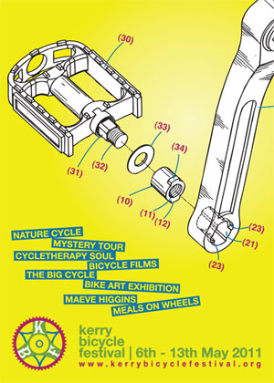

{kind=link}
{kind=link}
On your bike for the launch of the 4th annual Kerry Bicycle Festival 6.30pm at Siamsa Tire, Tralee.
Festival & Exhibition Launch 04 May '11
2011 Programme Launch 22 Apr '11

{kind=link}
Kerry Bicycle Festival 2011 Poster
The Festival will be launched on Saturday 23rd of April at 5 pm in Roundy’s Bar, Tralee by Arthur Spring and Jimmy Deenihan. We would love to see as many people there to support the festival, enjoy a cuppa and celebrate the simple joy of the bicycle.
There is a link for each festival event above and a full overview of the programme is available by clicking the PROGRAMME button to the left.
Here’s a little snippet from our brochure below which will be distributed early next week.
DID YOU KNOW …
… that outside of Dublin and Galway, Tralee has the highest percentage of commuter cyclists in the country. Not only is it safe, healthy, and sustainable, but it’s also great fun, and that’s why the Kerry Bicycle Festival came about.
Come along to the Kerry Bicycle Festival launch and exhibition at 6.30 pm, Friday, May 6th at Siamsa Tire and take a peek at what’s going on. We would also love to see cyclists of all ages and abilities saddle up for the BIG CYCLE on Saturday, May 7th at 3 pm.
Tralee has the potential to become a more cycle-friendly town. To find out more or get involved, come along to the Transition Town Cycle Advocacy talk at the Carlton Hotel on Thursday the 28th April at 8pm.
Call for Submissions 24 Mar '11
Hello there,
The 4th Kerry Bicycle Festival is happening this May, and we are looking for visual art, and films for the festivals art programme, you can find details here.
Update… 04 Mar '11
We are currently putting together the programme of events for this years festival,a and will be updating this website soon.
If you have any ideas for event, want to get involved or fancy supporting the festival, please get in touch.
While you are waiting you can have a look back at this video montage from last years festival !
Back in the Saddle ! 24 Feb '11
Hey folks,
The wheels are in motion for this years Kerry Bicycle Festival, so mark the 6th to the 13th of May into you diary.
Spherichord 13 Jan '11
Here a little video of Macdara Ó Maolbhuaidh playing his Spherichord instalation during last years festivla.
Bikes, Bees and Bzzzzzzzz ! 03 Jul '10
Hey Folks,
The Tralee Tri Club are organising a Vuvuzela inspired Flashmob this Monday [05 July] , and are calling for people to get on their bike dressed in Black and Amber [ any cycling Rockies out there ?]
- Meet: 7pm Sports Complex Car Park,Tralee, Monday 5th July 2010
- Mission details: Find the Bee and follow the Bee. The rest of the Mission will be revealed on the night!!
- Requirements: You must be on a bike and bee wearing tri suit or black & amber/yellow on your person, bring a vuvuzela if you have one to create a buzz.
Cycling Shorts Winners 16 Jun '10
After totting up the votes for our select team of judges as well as the audience vote, we are delighted to announce that first prize goes to Eric Dyer for his film Copenhagen Cycles, and second prize goes to Niamh Kennedy for Pedal Pushers.
Thanks to all the film makers who submitted their works for the festival.

Copenhagen Cycles – Eric Dyer

Pedal Pushers – Niamh Kennedy
Frame X Award 14 Jun '10
We are delighted to announce the winners of our art award, the winners were selected by a group made up of artists and cyclists.
First prize goes to Fiona Reilly for her piece EveryNothing and second prize goes to Shane Crotty for his piece The Policeman and the Bicycle. Congratulations to both Fiona and Shane and thank you to all the artist who submitted work for the exhibition.

Fiona Rielly – EveryNothing

Shane Crotty – The Policeman and The Bicycle
Victorious Treasure Hunters 14 Jun '10
 The winners of the bicycle Treasure Hunt were Dawid Pula and Oskar Naborczyk, pictured here celebrating their win with their trophies !
The winners of the bicycle Treasure Hunt were Dawid Pula and Oskar Naborczyk, pictured here celebrating their win with their trophies !
His Lovely Bicycle 14 Jun '10
{kind=link}
Festival Finale 21 May '10

I o7o KY 13 May '10
Frame X exhibition opened to a great crowd Thursday evening. Check out the Sperichord musical instrument in the background which was hung from the centre of the round gallery. Fairplay Macdara.
Swanky kbf t-shirts just arrived too !

Automobike 06 May '10
Check out then Automobike from last years festival !
Automobike from Michaelkelly Kelly on Vimeo.
Submission Deadline 06 May '10
Hey Folks,
Don’t forget that the deadline for submission of art and film is fast approaching.
Please get in contact if you wish to submit your work.